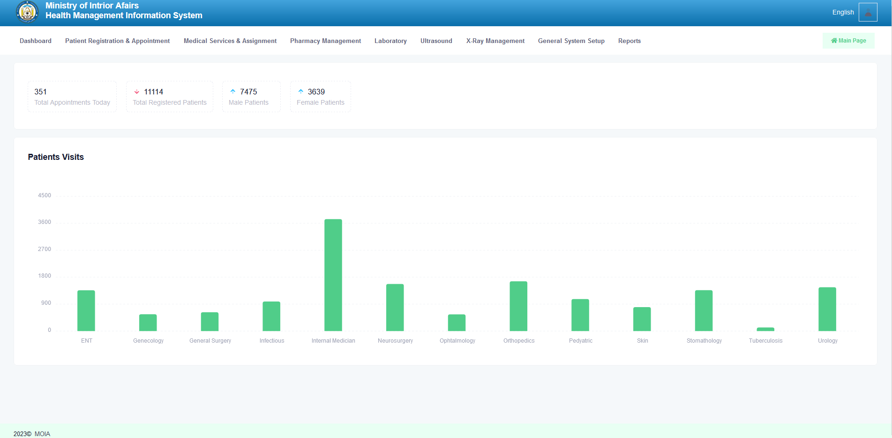

Backend
C#, .NET / ASP.NET Core, REST APIs, application services, authentication, validation, and business logic.
Software Developer · Kabul, Afghanistan
I’m Abdurrahman Noori, a .NET-focused full-stack developer working with C#, ASP.NET Core, databases, and modern web technologies to build maintainable applications and information systems.
About
I’m a software developer with experience building web applications and information systems using .NET, C#, JavaScript, and relational databases. I care about clean architecture, reliable data flows, understandable code, and software that solves the actual business problem instead of merely looking impressive in a diagram.
My work has included government-sector systems, hospital management, database-heavy applications, and full-stack development. I’m especially interested in backend engineering, application architecture, database design, and modernizing existing systems.
Capabilities
Grouped by how they are used in real projects, rather than arbitrary “96% expert” bars that somehow survived a generation of developer portfolios.
C#, .NET / ASP.NET Core, REST APIs, application services, authentication, validation, and business logic.
Relational database design, SQL, data modeling, normalization, indexing, performance, and data integrity.
Responsive interfaces and application frontends using semantic HTML, modern CSS, JavaScript, React, and Bootstrap.
Maintainable code, layered systems, API integration, debugging, requirements analysis, and practical software architecture.
Selected work
Some professional systems run on private or government networks, so public source code is not always available.

A comprehensive system created for a governmental hospital, covering patient management, appointments, electronic medical records, billing, pharmacy workflows, laboratory integration, medicine stock, and reporting.
The application centralizes important hospital workflows and data while supporting day-to-day operational efficiency. Because the system is deployed within a government environment, its source repository and live instance are private.
An e-commerce-style bookstore with book discovery, search, detailed information, reviews, checkout workflows, ordering, and personalized browsing features.
A platform that helps students explore universities and faculties, compare educational options, and access structured information to support academic decisions.
Experience
Ministry of Interior Affairs
Designing and developing database-backed applications, implementing backend functionality with .NET, building web interfaces, integrating application layers, troubleshooting production issues, and working with stakeholders to translate operational requirements into maintainable systems.
Database & Information Systems
Academic foundation in software development, databases, information systems, and core computer science concepts.
Contact
I’m open to professional conversations about software development, backend systems, databases, and full-stack engineering.